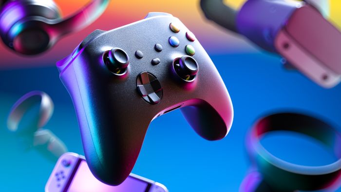
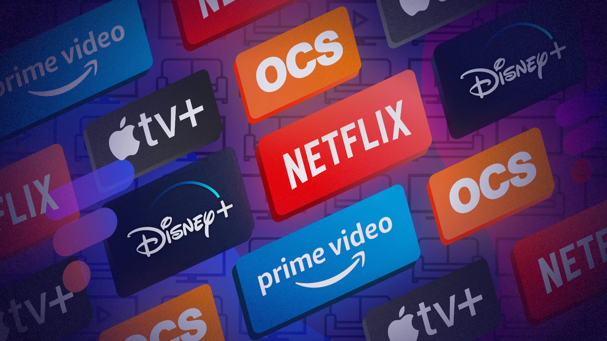

Le Sport
Indispensable pour maintenir l'équilibre corps-esprit. Qu'il s'agisse de musculation, de course à pied ou de sports collectifs, le dépassement de soi est le maître-mot.
Parce qu'il est essentiel de déconnecter pour mieux repartir, voici mes activités favorites pour m'évader.
Indispensable pour maintenir l'équilibre corps-esprit. Qu'il s'agisse de musculation, de course à pied ou de sports collectifs, le dépassement de soi est le maître-mot.

Un flux constant d'inspiration. De la deep house pour coder aux rythmes plus urbains pour l'énergie, elle m'accompagne dans chaque étape de ma journée.

Passionné par les univers immersifs et la compétition. C'est pour moi un excellent moyen de travailler mes réflexes et ma stratégie de groupe.

Consommateur de contenus tech, documentaires et tutoriels de haut niveau. Le streaming est ma première source d'apprentissage et de veille relaxante.